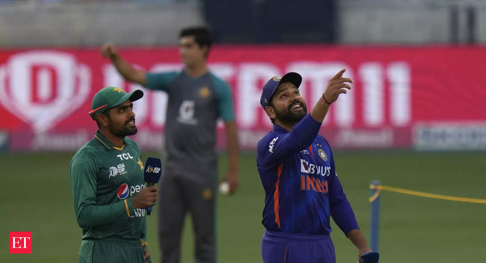

The India-Pakistan Match: A Clash of Titans
Image Credits https://m.economictimes.com/news/sports/odi-world-cup-india-to-play-pakistan-on-oct-15-in-ahmedabad-as-per-draft-schedule/articleshow/100933702.cms
The India-Pakistan rivalry in cricket is one of the fiercest in the world. The two countries have a long history of conflicts, and sports is one of the few arenas where they face each other on a regular basis. When India and Pakistan meet on the cricket field, it's not just a game; it's a matter of national pride, honor and glory.
From Sachin Tendulkar's epic innings in the 2003 World Cup to Misbah-ul-Haq's infamous scoop shot in the 2007 T20 World Cup final, the India-Pakistan matches have produced some of the most memorable moments in cricket history. Let's take a look at some case studies that highlight the intensity of this rivalry.
Case Study 1: The 1999 Chennai Test
The 1999 Test match between India and Pakistan in Chennai is regarded as one of the greatest matches in cricket history. Pakistan scored 238 runs in the first innings, and India responded with 254, thanks to a brilliant century by Sachin Tendulkar. In the second innings, Pakistan set a target of 271, and India needed 17 runs off the last over with two wickets in hand. The Pakistani bowler Saqlain Mushtaq took a hat-trick, and India lost the match by 12 runs. The Chennai Test is remembered not just for the quality of cricket, but also for the sportsmanship shown by both teams.
Case Study 2: The 2011 World Cup Semifinal
The 2011 World Cup semifinal between India and Pakistan was watched by an estimated 1 billion people worldwide. India batted first and scored 260 runs, thanks to a brilliant century by Sachin Tendulkar. Pakistan started their innings aggressively, but lost wickets at regular intervals. They were eventually bowled out for 231, and India won the match by 29 runs. The Indian team went on to win the World Cup, and Tendulkar was named the player of the tournament. The 2011 World Cup Semifinal is regarded as one of the greatest matches in World Cup history, and it further cemented the India-Pakistan rivalry as one of the biggest in the world.
Case Study 3: The 2017 Champions Trophy Final
The 2017 Champions Trophy final between India and Pakistan was a major upset for Indian cricket fans. Pakistan batted first, and scored a mammoth total of 338 runs for the loss of just four wickets. India's top order collapsed, and they were eventually bowled out for 158, losing the match by 180 runs. Pakistan's victory was hailed as one of the greatest underdog stories in cricket history. The 2017 Champions Trophy Final is regarded as one of the biggest upsets in modern cricket, and it shows that anything can happen when India and Pakistan face each other.
Conclusion
The India-Pakistan match is much more than just a game of cricket. It's a battle of cultures, and a showcase of national pride. The rivalry between India and Pakistan is intense, but it's also respectful and sportsmanlike. The India-Pakistan match is a testament to the power of sports to bring people together and to celebrate our differences.
Curated by Team Akash.Mittal.Blog
Share on Twitter Share on LinkedIn